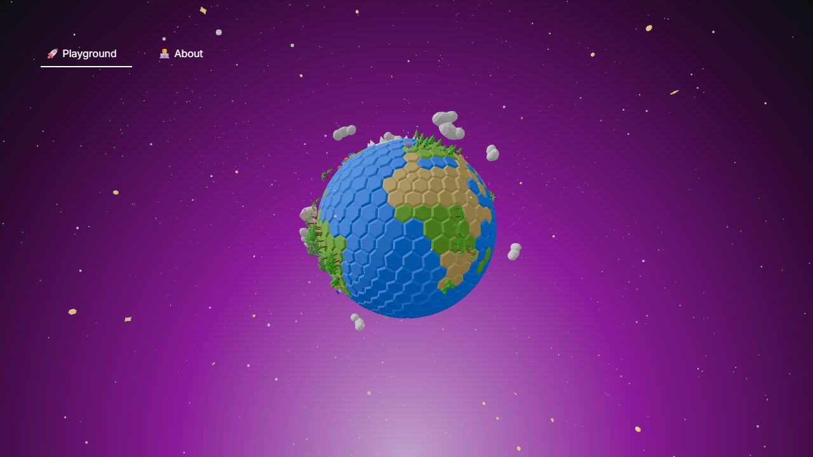
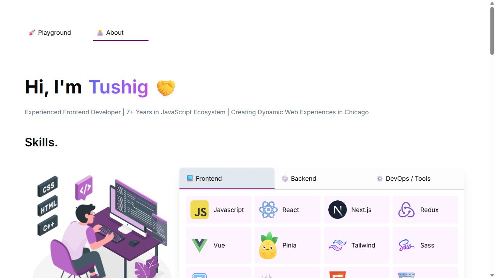
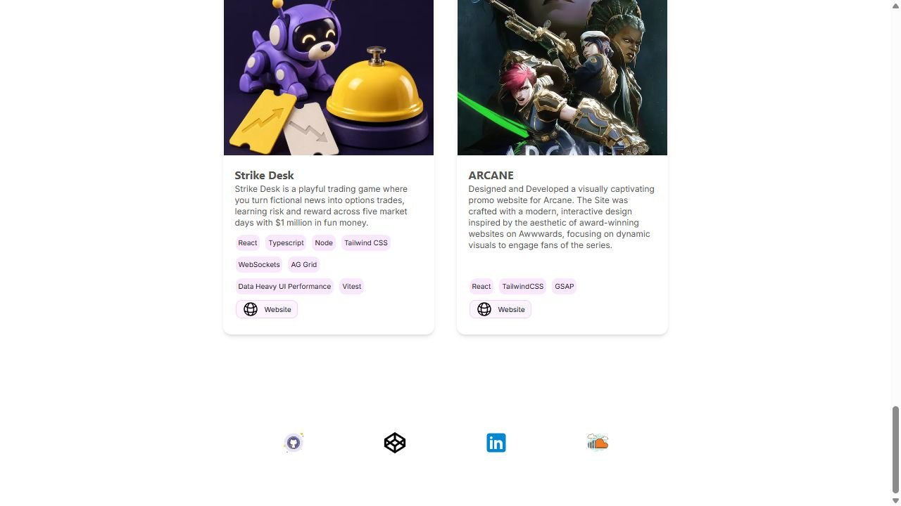

Make your work the first thing people remember.
Keep the playful 3D character. Give your engineering experience, projects and contact path the prominence they deserve.
Review of the running local portfolio and current source. Recommendations only; application files have not been edited.
Start with the visitor’s first minute

The scene needs an introduction
The homepage presents the planet and two navigation links. It does not identify you, describe your role or offer a direct work link.
First priority: name, specialty, selected work, contact.
Keep the scene as your signature, but give it a defined supporting role. Pair it with a short introduction and a clear “View selected work” link. Make the text available while 3D loads or fails.

Move proof above the skills catalogue
The first screen spends most of its space on a programming illustration and framework logos. The work that distinguishes you appears much later.
Put selected work immediately after the introduction.
Use the experience already in your content: frontend ownership at SoFi Stadium, accessibility work for Appriss and the reported Humana conversion improvement. Keep every claim qualified by its original project context.
Reduce skills to a compact summary and replace the long alternating timeline with a readable experience list.

Show what you built
The two projects are constrained to narrow cards. Decorative artwork gets more room than the product or your contribution.
Lead with real UI captures and readable case studies.
Give Strike Desk a large screenshot, then explain the problem, your role, one difficult engineering decision and the result. Give Arcane a motion-focused preview. Use real evidence; add no invented performance numbers.
Replace “Website” with “Play Strike Desk” and “View Arcane.” Add a visible contact action and named GitHub and LinkedIn links.
A clearer page order
- Introduction + actions
- Selected work
- Experience
- Skills
- Contact
This is a proposed content order. Existing routes can be preserved. The 3D playground can remain accessible without becoming a barrier to the professional story.
Suggested introduction
I build complex interfaces that feel straightforward.
I’m Tushig, a Software Engineer in Chicago with 7+ years in the JavaScript ecosystem.
Suggested copy based on current portfolio facts, for your review.
Refine the existing visual identity
Keep purple and the light canvas. Use solid display type, fewer emoji, consistent spacing and larger project imagery. Keep Inter for continuity; typography hierarchy will do more here than a font swap.
Design source: existing project tokens and type. Magnolia #F8F4FF and purple #800080 come from the portfolio; ink is a proposed text refinement. This review is not a replacement design system.
Small details with a large effect
Keyboard access and readable controls
Skills categories use clickable list items, which do not provide normal keyboard tab controls. Use semantic buttons or a proper tab pattern. Give social links distinct accessible names. Increase 10px project labels and links to a comfortable reading size and provide generous tap targets.
Motion and loading
Provide reduced-motion behavior for the rotating scene and animated illustration. Keep navigation and identity visible during loading. Load the 3D scene only where it is used, and address the observed Three.js geometry warning. Performance has not been benchmarked in this review.
What the automated scan does and does not prove
The scan returned 10 warning records: one gradient-text warning, one palette warning, seven repeated bounce-easing warnings and one gray-on-color warning. Purple is part of the existing identity. The tag text is visibly dark enough that the gray-on-color warning is not a confirmed contrast defect. Keyboard access and tiny text are more actionable than a style score.